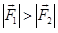
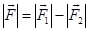
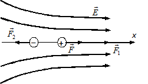
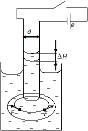

ОПРЕДЕЛЕНИЕ ДИЭЛЕКТРИЧЕСКОЙ ПРОНИЦАЕМОСТИ ЖИДКОГО ДИЭЛЕКТРИКА
Диэлектрик (изолятор) — вещество (материал), относительно плохо проводящее электрический ток. Электрические свойства диэлектриков определяются их способностью к поляризации во внешнем электрическом поле. Термин введён английским физиком М. Фарадеем.
Незаряженный диэлектрик, помещенный в электрическое поле, поляризуется. Процесс поляризации неполярного диэлектрика состоит в смещении центров тяжести положительных и отрицательных зарядов молекулы друг относительно друга, т. е. в образовании диполей. Поляризация полярного диэлектрика заключается в преимущественной ориентации вдоль поля уже имеющихся в диэлектрике диполейю.
Рассмотрим качественно поведение такого диполя в неоднородном электрическом поле. Пусть в направлении оси X напряженность поля Е возрастает. Графически это изображается сгущением силовых линий (рис. 1). Силы, действующие на заряды диполя, неодинаковы,
 , так как Е1 в той точке, где находится положительный заряд больше, чем Е2 в точке, где расположен отрицательный заряд. Следовательно, диполь в неоднородном поле под действием результирующей силы

перемещается в область более сильного поля. Этим явлением, в частности, объясняется втягивание диэлектрика внутрь плоского конденсатора.

Рис. 1

Рис. 2